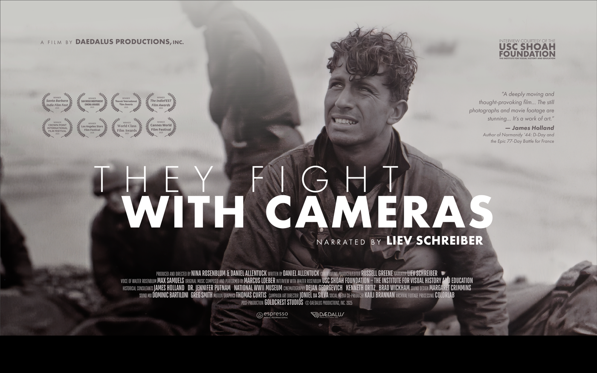
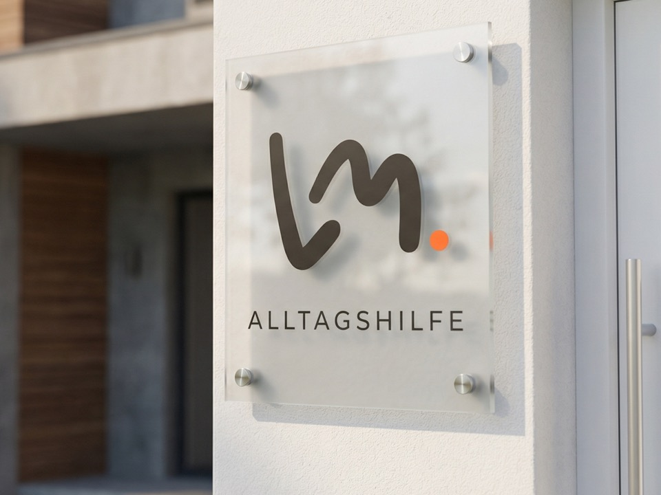
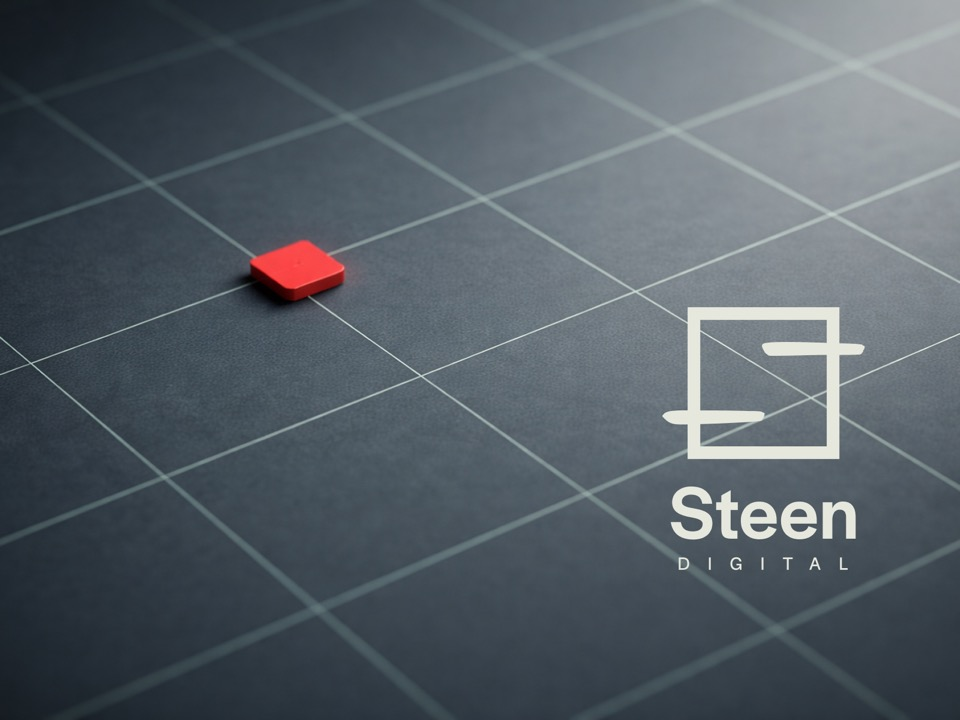
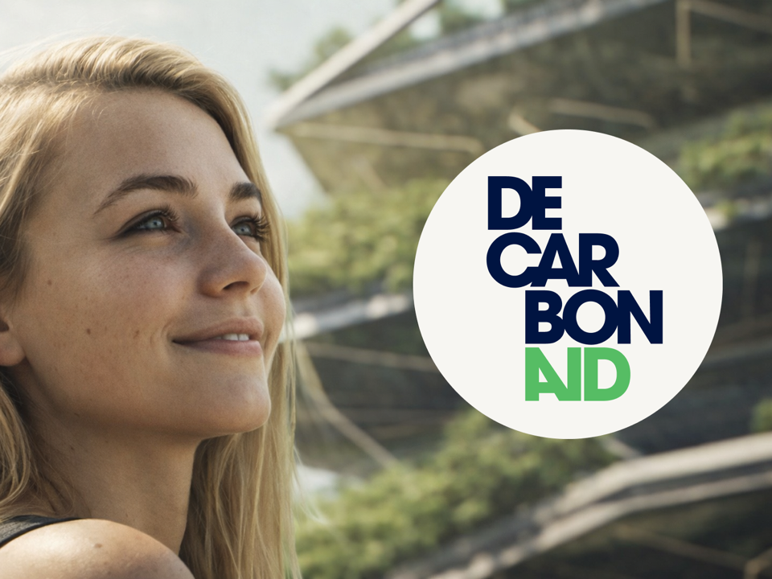

Film · Art Direction
They Fight With Cameras
Art direction for a documentary about the war photographers who shaped how we see conflict. Leading the visual language for Daedalus Productions.
View ProjectSelected Work
A selection of recent brand sprints, creative direction, and visual identity work for founder-led businesses and global brands.

Art direction for a documentary about the war photographers who shaped how we see conflict. Leading the visual language for Daedalus Productions.
View ProjectA respected radiology practice needed to modernise its brand without losing the trust and authority built over 15 years. Precision meets warmth.
View Project
A home care company built on genuine compassion needed a brand that matched. We centred the identity on dignity, autonomy, and everyday heroism.
View Project
The first case developed with my Brand Sprint method. We built strategic and visual foundations from scratch, creating structure, shape, and confidence for long-term collaboration.
View Project
A climate-tech startup with a brilliant product but no coherent brand. Clarity became the antidote to greenwashing.
View ProjectStart a Project